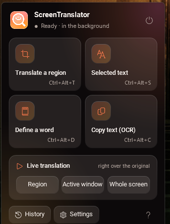

“Circle to Search” for Windows — offline OCR plus a live overlay that paints the translation right over the original text.
ترجمهی هر متنی روی صفحه با یک میانبر؛ یا ترجمهی زندهی یک ناحیه، درست روی خودِ متن اصلی.
